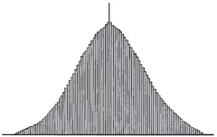
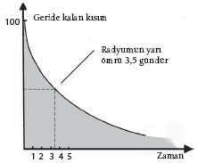

Belirsizlik, kuantum gerçekliği ve istatistiğin olası rolü
Soruyu tersine çevirerek işe başlayabiliriz. Her şey tahmin edilebilir midir? Evrendeki süreçlerin nasıl ortaya çıkacağını belirleyen kurallar üzerinde çalışabilir miyiz? Bu bize doğa üzerinde olağanüstü bir güç kazandıracaktır; insanlığın her zaman hayalini kurmuş olduğu türden bir güç.
Birçok bakımdan insan varoluşunun tamamı bu arayışla sarılıp sarmalanmıştır. Etrafımızdaki dünyaya bakarız; gördüklerimizi bir kurallar ve genellikler dizisine indirmemizi sağlayacak düzenlilikleri, ilişkileri bulmaya çalışırız. Bu da gelecekte karşılaşabileceğimiz ya da karşılaşmayabileceğimiz şeyler hakkında tahminler yürütmemizi, beklentilerimizi ve hareketlerimizi bu tahminlere uygun olarak değiştirmemizi sağlar. Bizler tam anlamıyla örüntü arayıcılarız.
Örüntü tespit etmenin, bir yönüyle, bir tür olarak bize büyük yararı dokunmuştur. Savanada hayatta kalmamızı sağlayan şey kuşkusuz budur. Bir yırtıcı hareketsiz olduğunda kendisini saklayabilir; fakat hayvan hareket eder etmez çevremizdeki örüntülerde bir değişiklik fark etmiş ve kaçma eylemine girmişizdir. Kökler ve meyveler tahmin edilebilir coğrafi ve zamansal örüntülerle (mevsimler) yetişir, bu da onları bulup onlarla beslenmemizi sağlamıştır.
Kanıtlar, hayatlarımız örüntü tespitine dayandığı için, beyinlerimizin gelişiminin bu süreci aşırı uçlara götürdüğünü, bizi ortada olmadıkları halde örüntüler görmeye zorladığını düşündürüyor. Örneğin aşırıya kaçarak yaprak ve çalı yığınlarını görünmez ruhlar dünyasının kanıtı olarak yorumlamışızdır. Modern araştırmalar, çevremizdeki örüntülere bu biçimde aşırı duyarlılık göstermemizin bizi dini inanışa hazırladığını ileri sürmektedir; insan türünün hayatta kalmak için ödediği bedel akıldışı olana doğru bir eğilim –dokunamadığımız, göremediğimiz, açıklayamadığımız şeylerin değerlendirilmesi– olmuştur.
Fakat ironiktir, bilim insanları kendi gözlerindeki çapak yüzünden, akıldışı düşüncenin nereden geldiğine dair ancak düşünceler üretebilmişlerdir. Bilim insanları olmadığı yerde örüntü görme, düzenlilik olan yerde rastgelelik görme eğilimlerinin artık acıyla farkına varmışlardır. Bununla savaşabilmek, etrafımızdaki dünyada bir düzen, amaç ya da yapı olup olmadığını belirleyebilmek için insan zihninin hem ne kadar parlak hem ne kadar bön olabileceğini açıkça ortaya koyan bir icada ihtiyacımız vardı. Bu icadı “istatistik” adıyla biliyor olabilirsiniz.
Zar Atıldı
Modern bilimdeki gelişmelerin birçoğunun aksine, istatistiğin Yunanlılarla hiçbir ilgisi yoktur. Yunanlıların kumardan ne kadar hoşlandığı göz önüne alınırsa bu dikkat çekici bir durumdur. Yunanlılar ve Romalılar saatler boyunca kadim dünyanın zarlarını atarlardı. Bu zarlar, astralagi’den yapılırdı: Koyunların ve geyiklerin topuklarında bulunan altı yüzlü kemiklerden. Bu kemiğin altı yüzünden sadece dördü düzdü, bu düz yüzlere rakamlar verilmişti. Zanaatkârlar birbirinin karşısına denk gelen iki yüze 1 ve 6 rakamlarını, sonra diğer iki düz yüze 3 ve 4 rakamlarını kazımışlardı. Rakamların yerleştirilme biçimleri öyleydi ki 1 ve 6’nın yaklaşık dört kez atılması, 3 ile 4’e nazaran daha az muhtemeldi.
Girişimci bir Yunan matematikçinin, astralagi’yle oynanan zar oyunlarından bir servet kazanmış olabileceğini düşünebilirsiniz. Gelgelelim böyle bir matematikçinin çıkmamış olmasının sebepleri vardır. Öncelikle Yunanlılar hiçbir şeyi rastgele şans olarak görmezlerdi: Her şey tanrıların gizli planlarında yazılıydı. Ayrıca Yunanlılar iş rakamlara geldiğinde biraz hantaldılar. Yunan matematikçiler sadece şekillerle ilgileniyorlardı: Geometride mükemmelliğe ulaşmışlardı. Fakat rastgelelikle uğraşmak aritmetik ve cebir gerektirir; Yunanlıların bu alanlardaki becerileriyse sınırlıydı.
Rastgeleliği kavramak için gerekli olan tek atılım, cebrin icadı değildi. Açıktır ki bu kavrayışa ulaşmak, altı yüzünden herhangi birinin üzerine düşmesi eşit derecede olası “adil” bir zarın üretimini de gerekli kılıyordu; 17. yüzyılda Newton’ın çizdiği göklerin mekanizmasının yanı sıra ortaya çıkan ilk olasılık kuramları neredeyse tümüyle, zarı attığınızda neler olduğuyla ilgiliydi.
<>
“Şans; o gizemli, fazlasıyla istismar edilmiş sözcük, cehaletimizi
örten bir peçedir yalnızca. Sıradan zihin üzerinde son derece
mutlak bir hükümdarlık kuran bir hayalettir.”
ADOLPHE QUETELET
<>
Bu kuramlar zarların adil olduğu fikrine dayanıyordu ve biraz ilkel olmakla birlikte doğal dünyadaki süreçlerin rastgele olup olamayacağını kavrama yönünde ilk girişimlerdi. Zarlardan, yazı tura atıp kağıt karmaya, nihayetinde de istatistiğe, olasılığa ve rastgelelik kavramına vardık.
Olası Neden
Belçikalı gökbilimci ve matematikçi Adolphe Quetelet olasılığı insan ilişkilerine uyarlamaya ilk kez 1830’lu yıllarda başladı ve insan nüfuslarının fiziksel ve ahlaki özelliklerinin dağılımıyla ilgili istatistiksel kavrayışlar geliştirmeye başladı. “Ortalama insan” kavramını geliştiren Quetelet oldu.

QUETELET’NİN DAĞILIM EĞRİSİ
Quetelet dikkatini doğa olaylarındaki rastgelelik kavrayışına çevirdiğinde hiç esir almamaya kararlıydı. “Şans, o gizemli, fazlasıyla istismar edilmiş sözcük, cehaletimizi örten bir peçedir yalnızca,” diyordu. “Uzun bir olaylar dizisini görebilen filozof karşısında bir hiçe inen, olayları sırf yalıtılmış olarak değerlendirmeye alışık olan sıradan zihin üzerinde son derece mutlak bir hükümdarlık kuran bir hayalettir şans.”
Kadim medeniyetler gezegenlerin hareketlerini tahmin edebilecek beceride olmuşlarsa da Quetelet’ye dek hiç kimse yağmurun bir pencere pervazına düşmesinde ya da göktaşı yağmurları yaşanmasında bir örüntü olabileceğini düşünmemiştir. Quetelet uzun zamandır rastgele olduğu düşünülen şeylerdeki istatistiksel örüntüleri ortaya koyarak bunu tümüyle değiştirmiştir.
Gelgelelim rastgelelik kavramı Quetelet’yle ölmüş değildir. Quetelet’nin çalışmaları “uzun olaylar dizisinin” sıklıkla istatistiksel bir örüntü izlediğini gösteriyordu. Fakat bu durum tek bir olayın tahmin edilemeyeceği fikrinin önünü açıyordu. Quetelet’nin biliminde, bozuk para havaya birçok kereler atıldığında yazı ve turaların tahmin edilebilir bir dağılımı ortaya çıksa da para havaya tek bir kez atıldığında sonucun ne olacağı tahmin edilebilir değildir.
Cehalet Peçesini Kaldırmak
Fakat burada bile, bilim artık rastgelelik algılamasının cehaletin bir sonucu olduğunu göstermiştir. Havaya bozuk para fırlatmak, çeşitli etkenlerin karmaşık bir biçimde bir araya gelmesini gerektirir. Bozuk paranın başlangıçtaki durumu, fırlatmanın açısal ve doğrusal ivmesi, paranın hangi mesafeden yere düştüğü, uçuşu sırasındaki hava direnci gibi. Bunların hepsini akla yatkın bir doğrulukla bilirseniz paranın nasıl düşeceğini kesin olarak tahmin edebilirsiniz.
---
GÜRÜLTÜDEN FAZLASI
Dünya nihayetinde rastgeleyse, en azından bu rastgeleliği kullanabiliriz. Başlangıç itibarıyla kararsızlık mefhumuna bakalım. İkinci Dünya Savaşı sırasında hava kuvvetleri, aletlerinin uçak uçuş halindeyken daha iyi çalıştığını fark etmişti. Uçağın titreşimleri, göstergelerin iğnelerini küçük, rastgele hareketlerle ileri geri sallıyor; bu durum aletlerin mekanizmalarındaki sürtünmenin üstesinden gelinmesini sağlıyordu. Öyle görünüyor ki rastgele sesler de doğal dünyadaki yaratıkların yardımcısıdır. Kerevit balığının durgun sudayken yırtıcılara av olması daha muhtemeldir. Azıcık bir çalkalanma sesi, kerevite yaklaşmakta olan bir balıkla ilişkilendirilebilecek değişiklikleri fark etme avantajı veriyor gibi görünmektedir.
Beslenme denkleminin öbür tarafında, rastgelelikten, çok dişli mersin balığıgiller (paddlefish) plankton avlarken yararlanır. Plankton zayıf bir elektrik sinyali salar, balığın uzun burnu bu elektrik alanını yakalayabilecek olan elektrik alanı sensörleriyle donanmıştır. Fakat çoğunlukla planktonun sinyalleri balığın tespit edemeyeceği kadar zayıftır. Gelgelelim evrim balığa sinyale bazı sesler ekleyebilecek sinir hücreleri kazandırmıştır. Sonuçta, zayıf sinyali mersin balığının hissedebileceği kadar güçlendiren “stokastik rezonans” denilen fenomen ortaya çıkmıştır.
Beyinlerimizde de benzer bir numara iş başında olabilir. Bütün omurgalılarla aynı beyin mimarisini paylaşan meyve sineklerinin, koku alma duyularını geliştirmek için stokastik rezonanstan yararlandığı gösterilmiştir. Araştırmalar görme duyusunun, duymanın ve yaşlı bir insanın dokunma ve denge duyumlarının beynin kulaktan, gözden ya da deriden aldığı sinyallere biraz rastgele gürültü eklenmesiyle iyileştirilebileceğini göstermektedir. Örneğin Cochlear marka implantlar sağır insanların düşük düzeyde rastgele gürültüyle birlikte daha iyi duymasını sağlar.
---
Dolayısıyla bir bozuk paranın havaya fırlatılması hiç de rastgele değildir. Bir zarın atılması daha rastgeledir; fakat yine de tam anlamıyla rastgele değildir. Burada da aynı kural geçerlidir: Prensipte, baştaki bütün koşulları ve atışın kesin dinamiğini biliyorsanız zarın hangi yüzünün üstüne geleceğini hesaplayabilirsiniz. Burada sorun zarın keskin köşeleridir. Bir zarın köşesi masaya çarptığında sonuç kaotik olur (bkz. Kaos Teorisi Felaket mi Haber Veriyor?): Bunu izleyen hareket hassas bir biçimde, zarın köşesinin tam olarak hangi açıyla ve hangi hızla çarptığına bağlıdır. Bunun peşi sıra bir köşenin üzerine düşmenin sonucu nihayet daha hassas bir biçimde bu ilk koşullara bağlı olacaktır. Bu yüzden bir bozuk parayı havaya fırlatmamızın nasıl sonuçlanacağını ilk bilgilere dayanarak hesaplayabileceğimizi ümit ederiz, oysa bir zar atışına dair tahminlerimiz çok daha az doğruluk payı taşıyacaktır. Eğer atışta iki ya da üç kaotik çarpma olursa tahminlerimiz rastgele olmaktan öteye biraz zor geçecektir.
Gelgelelim kaotik sistemlerle gerçekten rastgele sistemler arasında bir ayrım yapmak önemlidir. Bir zar atışı bizim açımızdan tahmin edilebilir değildir, ama rastgele de değildir: Seçilebilir kanunları izlediğini biliriz; ne var ki bu kanunlar, baştaki koşullara dair sınırlı bilgimize dayanarak sonuçlarını doğru bir biçimde hesaplayabileceğimiz kanunlar değildir, o kadar. Aynı şeyi hava durumu için de söyleyebiliriz: Hava durumunun rastgeleymiş gibi görünmesine neden olan bizim sınırlılıklarımız, Quetelet’in deyişiyle bizim cehaletimizdir. O halde herhangi bir şey gerçekten rastgele olabilir mi? Bilimin en büyük, en temel tartışmalarından birinin merkezinde yatan soru budur.
20. yüzyılın başında Lord Kelvin, fiziğin ilerleme biçiminden duyduğu memnuniyeti ifade etmişti. Newton temel atma çalışmasını yapmıştı; onun hareket kanunları ışığın ve ısının doğasına ilişkin olarak ortaya çıkmakta olan anlayışın temelini atmakta kullanılabiliyordu. Evet, birkaç ufak tefek mesele –onun deyişiyle “bir-iki bulut”– vardı; fakat esasen fizikçiler artık evreni anlayışımızla ilgili olarak “i”lerin noktasını koyup “y”lerin üstünü çizmekten biraz daha fazlasını yapmaktaydı. Tesadüfe bakın, büyük Alman matematikçisi David Hilbert da aynı biçimde iyimser hisler içindeydi. Hilbert 1900’de Paris’te düzenlenen bir matematik kongresinde, çözülmeleri halinde matematiğin defterini dürecek 23 çözümsüz matematik problemi sunmuştu.
Belirsizlik Hakkında Kesinlik
Hilbert da Lord Kelvin da iyimserliklerini yanlış bir yere yöneltmelerinden ötürü suçluydular. Birkaç yıla kalmadan görelilik ve kuantum kuramı fiziğin geleceğini formüle etmek üzere Newton kanunlarını kullanma fikrini dinamitledi. Dahası Avusturyalı matematikçi Kurt Gödel, Hilbert’ın sormamış olduğu bir matematik sorusunu cevaplayarak ayaklarının altındaki halıyı çekip aldı ve o halıyla birlikte Hilbert’ın sorduğu sorulardan birinin cevaplanabileceği yönündeki bütün kesinliği de alıp götürdü.
Gödel, eksiklik kuramı dediği bir şey formüle etmişti. Bu kuram esasen hiçbir zaman cevaplanamayacak bazı matematik problemleri olduğunu söylüyordu. Matematiksel fikirleri formüle etme biçimimiz yüzünden bazı şeyler asla kanıtlanamaz. Matematik ebediyen eksik olmaya yazgılıdır. Bu durumun rastgelelik sorunuyla derinden ilgisi vardır. Bazı şeyler bilinemiyorsa davranışları, bütün bildiklerimiz itibarıyla rastgele olabilir. Rastgelelik aslında bir sisteme içkin bir özellik olmayabilir; fakat böyle olmadığını hiçbir zaman kanıtlayamayız. Gödel eksiklik kuramını 1931’de yayınlamıştı. Bu tarihe gelindiğinde bilebileceklerimizin sınırıyla ilgili kavrayışımız pek de sürpriz sayılmazdı. Yeni doğmuş kuantum kuramına aşinaysanız nihai cevaplara ilişkin cehaletinizi çoktan teslim etmiş oluyordunuz.
Öncelikle kuantum kuramı, önümüze içkin belirsizlik sorununu koyar. Werner Heisenberg, kuantum kuramının denklemleriyle uğraşırken incelediğiniz sistemin nitelikleriyle ilgili sorular sorabileceğinizi; fakat eş zamanlı olarak sorulamayacak belli soru bileşimleri olduğunu fark eden ilk isim olmuştu. Örneğin denklemler size bir parçacığın tam momentumunu ya da pozisyonunu verecektir. Fakat ikisini aynı anda vermeyecektir. Bir parçacığın, belli bir andaki momentumunu öğrenmek istiyorsanız parçacığın o andaki pozisyonuyla ilgili olarak, kelimenin tam anlamıyla hiçbir şey söyleyemezsiniz. Bu ilke, Heisenberg’in belirsizlik ilkesi, kuantum teorisinin temel bir niteliğidir.
Heisenberg bunu haklı çıkarmak için mikroskop benzetmesini kullanmıştır. Bir parçacığın pozisyonuna bakmak istiyorsak ona bir şey, bu örnekte bir ışık fotonu çarptırmamız gerektiğini söylüyordu. Fakat böyle yaptığımızda foton parçacığın momentumunu alır. Başka bir deyişle parçacığın konumunu ölçerek ayrı bir özellikte bir değişim yaratmış oluruz; dolayısıyla parçacığın hem konumunu hem de momentumunu aynı anda doğru olarak bilemeyiz. Momentumu, enerjiyi ya da dönüşü belirlemek üzere yapacağımız herhangi bir ölçümün başka özellikler üzerinde etkileri olacaktır. Zamanın bir anında, bir sistemin bütün özellikleri hakkında kesinliğe hiçbir zaman ulaşılamaz.

RADYUM 224’ÜN RADYOAKTİF ÇÜRÜMESİ
İkinci ve çok daha temel sorunsa pratikteki sınırlarla o kadar ilgili değildir; daha çok doğrudan içkin tahmin edilebilirlikle ilgili bir sorundur. Bunun için verilen klasik örnek, Marie Curie’nin yanında taşıdığı radyum külçesine benzer radyoaktif bir kaya parçasıdır. Fizikçiler size, radyumun en hızlı çürüyen izotopundan oluşmuşsa, bu külçenin radyoaktifliğinin her üç buçuk günde bir yarıya ineceğini söyleyebilir. Bu durumda bir hafta sonra, başlangıçtaki radyoaktifliği dörtte bire inmiş olacaktır.
Gelgelelim bu istatistiksel bir ortalamadır. Size bir radyum atomunun belli bir süre zarfında çürüyüp çürümeyeceğiyle ilgili hiçbir şey söylemez. 1000 yıl sonra bu külçedeki atomların bazıları hâlâ çürümemiş olacaktır. Bazıları saatinizi çalıştırmanızı izleyen birkaç dakika içinde çürüyecektir. Ve hangi atomun nasıl bir akıbete uğrayacağını tahmin etmenin bir yolu yoktur. Kuantum kuramında hiçbir şey çürümeyi neyin başlattığını söylemez. Bütün niyetler ve amaçlar bakımından bu rastgeledir; sanki Kadir-i Mutlak her atom için 10 tane zar atıyormuş da ancak 10 tane 6 gelmesi çürümeye sebep oluyormuş gibidir. Einstein bunu kuantum kuramının eksik olduğunun kanıtı olarak almıştır. Bu ilahi zar oyununun yerini tutacak bazı “gizli değişkenler” olması gerektiğini söylemiştir.
Kadir-i Mutlak Zar Atar
“Yüce Olan”ın zar atmadığı fikri, herhalde Albert Einstein’ın en fazla alıntılanan sözüdür. Fakat bu sözün arkasında dini saiklerin yatmadığını belirtmek önemlidir. Einstein “Tanrı” sözünü sık sık doğa ya da evren sözcüğünün yerini alacak bir metafor olarak kullanırdı. Dikkat çektiği nokta basit ve materyalistti. Evren kesinlikle belirlenimci kanunlara göre mi işler? Her sonucun kesinlikle bir nedeni mi vardır? Kuantum kuramının kurucu babası olarak görülen Niels Bohr, buna kuşkuyla cevap veriyordu. Einstein’a tekrar tekrar kuantum kuramının rastgelelik üzerine kurulduğunu söylemişti. Bazı sonuçların hiçbir nedeni yoktu. “Einstein, Tanrı’ya ne yapacağını söylemeyi bırak,” demişti.
Heisenberg’in belirsizlik ilkesinde olduğu gibi, bu rastgelelik de kuantum kuramının denklemlerine yazılmış gibi görünmektedir. Merkezi denklem, yani kuantum sistemlerinde gerçekleştirilen deneyleri anlamanın tek yolu, Schrödinger’in dalga denklemidir. Bu denklem kuantum nesnelerine dalgaların niteliklerini atfeder. Kuantum dünyasıyla ilgili bir şey bilmek istiyorsak bu dalga denklemini çözeriz. Fakat bu denklemden çekip çıkarabileceğimiz tek şey bir olasılıktır.
Kuantum kuramını gerçekten parçalayan şey budur. Kuantum kuramı doğduğunda, 1920’lerde, istatistik sağlam bir biçimde oturmuş bilimsel bir disiplindi. Termodinamik; sıcaklıkla ilgili olarak Sanayi Devrimi’ne eşlik etmiş olan incelemeler, istatistiğe dayanıyordu. Başka birçok bilim dalı deney sonuçlarını doğrulamak için istatistiği kullanıyordu. Fakat kuantum kuramı, sonuçlarının ancak olasılık olarak ifade edilebileceği yönündeki iddialarıyla benzersiz görünüyordu; bu yüzden Einstein’a da rahatsız edici geliyordu.
Kuantum kuramının ortodoks yorumuna göre kuantum deneylerinin sonuçları, tümüyle şansa bağlıdır. Einstein’ın bunu kabul etmeye yanaşmaması büyük ölçüde bu durumun açılımlarının ciddiyetinden kaynaklanmaktadır. Kuantum kuramı dünyayı, en temel parçacıkları ölçeğinde tanımlar. Kuantum süreçleri rastgeleyse, bu durumda her şey nihai olarak rastgeledir.
Bohr’un bununla hiçbir sorunu yoktu; çünkü nihayetinde hiçbir şeyin hiçbir özelliği olmadığına inanıyordu. Deneylerimiz ve ölçümlerimizin deneysel cihazlarımızda belli değişimler yaratacağını, bunları bir atomun momentumuna ya da bir elektronun dönüşüne tercüme edeceğimizi söylüyordu. Fakat Bohr bu niteliklerin, ölçümden bağımsız olarak var olan bir şeyin yansıması olmadığını söylüyordu. Dolayısıyla Bohr’a göre deney sonuçlarının rastgele dağılmış gibi görülmemesi için hiçbir sebep yoktu; rastgele olmayan bir sonucun doğabileceği düzenli bir nesnel gerçeklik yoktu. Onun zihniyetine göre, başka türlü olması tuhaf olurdu.
Bu olağandışı bir bakış açısı olarak görünüyor: Radikal ve sarsıcı. Bir elektron ancak, ölçüm aygıtımızın bir tuhaflığı olarak var olabilir. Sonsuz derecede daha “sağduyu” odaklı Einstein’ın bunu Bohr’la yıllarca tartışmış olması o kadar da hayret verici değil. Einstein, tartışmaları başladığında Bohr’a karşı “sevgiye benzer bir şey” duyduğunu söylemişti; entelektüel didişmelerinin böyle bir yoğunluğu ve hoşluğu vardı. Fakat tartışmanın sonuna gelindiğinde, öyle bir noktaya varmışlardı ki artık birbirlerine söyleyecek bir şeyleri kalmamıştı. Einstein’ın onuruna verilen bir akşam yemeğinde, o ve dostları salonun bir ucunda toplanırken, Bohr ile hayranları diğer uçta durmuşlardı.
Rastgele Bir Evrenle Yaşamak
Nihayetinde tarih, Bohr’un haklı olduğunda karar kılmıştır. Bohr’un karakterinin gücü dikkate alınırsa belki de bu kaçınılmazdır; örneğin Bohr bir keresinde Heisenberg’i gözyaşlarına boğmuştur. Hakikat ne olursa olsun Einstein’ın keşfedilmeyi bekleyen gizli değişkenler kavrayışı bilimsel olarak saygınlığını korusa da genel geçer bakış açısı nesnel gerçekliğin bağımsız bir varoluşu olmadığı yönündedir. Kuantum deneylerinde tezahür eden gerçeklik hakkında söyleyebileceğimiz tek şey, olasılıklar yelpazesini ve olasılıkların görünme ihtimalini tahmin edebileceğimizdir. Peki, bunlar son sözler midir? Evren nihayetinde rastgele midir? Kuantum moleküllerinden oluşan yaratıklar olarak bizler kendimizi kaprisli kuvvetlerin insafına terk edilmiş bulmaya yazgılı mıyız? Evet, fakat bu soru tıpkı bir Roma zarı gibi yüklüdür.
Bizler doğal olarak rastgeleliği olumsuz terimlerle ifade ediyormuş gibi görünüyoruz, “makus talihin tekmeleri ve okları yüzünden acı çektiğimizden” bahsediyoruz. Fakat Shakespeare’in gayet iyi bildiği üzere şans genellikle iyidir de. Örneğin Shakespeare Cymbeline’de Pisanio’ya “talihin o yola sokulmamış bazı gemiler getirdiğini” söyletmişti. Sorun şudur ki binlerce yıllık dini düşünceler, etrafımızdaki dünyada olan her şeyin bir sebepten ötürü olduğu hissini dayatmıştır. Bilim de bu hissi güçlendirmiştir: Öngörülebilirliği takdir ederiz. Fakat rastgelelik de yararlı olabilir (bkz. Sesten Fazlası kutusu).
Bunun da ötesinde rastgelelik varoluşumuzun kökeninde bile yer alıyor olabilir. Biraz önce gördüğümüz üzere Heisenberg’in belirsizlik ilkesi evren açısından temel önemdedir. Bunun başlıca sonuçlarından biri, boş uzay alanlarının bile sıfır enerjiye sahip olamayacak olmasıdır; aksine uzayın tamamı rastgele bir biçimde varlık bulup sonra da kaybolup giden bir “sanal” parçacıklar kalabalığıyla doludur. Uzayın “boşluğundaki” bu kuantum dalgalanmalarının evrenin ivmelenmekte olan genişlemesini yönlendiren “karanlık gücün” kaynağı olduğu düşünülür. Evrenimizi ortaya çıkaran “Büyük Patlama”nın nedenine getirdiğimiz en iyi açıklama da “hiçbir şeyden çıkan”, fakat kaybolup gideceğine büyüyen benzer bir dalgalanmadır. Rastgeleliğin kötü bir şey olduğunu düşünebilirsiniz; fakat rastgelelik olmasaydı siz burada oturmuş onu düşünüyor olamazdınız.